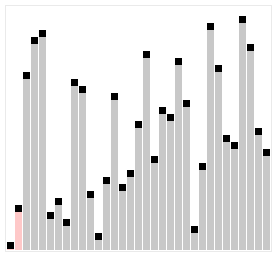

Ден 4: Прости сортировки
Сортирането е една от най-фундаменталните операции в програмирането. Днес ще разгледаме трите основни алгоритъма с квадратна сложност O(n²). Те са лесни за имплементиране, но се използват предимно за масиви с малък брой елементи.
Преди да започнем, е важно да споменем, че в реализацията на проф. Голев често се използва разширяващ метод (extension method) за размяна на елементи:
// Помощен метод, който ще виждаш в кодовете static class IntArraySwap { static public void SwapElements(this int[] array, int indexOne, int indexTwo) { int tmp = array[indexOne]; array[indexOne] = array[indexTwo]; array[indexTwo] = tmp; } }
Сортировка чрез Пряка селекция
Идея: Разделяме масива на сортирана (лява) и несортирана (дясна) част. На всяка стъпка намираме минималния елемент в оставащата несортирана част и го разменяме с първия елемент от тази част.

Визуализация на Selection Sort: намиране на минимален елемент и размяна.
C# Реализация (по проф. Голев)
static void SelectionSort(int[] arr) { for (int i = 0; i < arr.Length - 1; i++) { int min_el = arr[i]; int pos = i; // Търсим най-малкия в дясната част for (int j = i + 1; j < arr.Length; j++) { if (arr[j] < min_el) { min_el = arr[j]; pos = j; } } // Разменяме с текущата първа позиция (arr[i], arr[pos]) = (arr[pos], arr[i]) } }
O(n²) във всички случаи
(Най-добър, Среден и Най-лош). Дори масивът да е вече сортиран,
алгоритъмът отново ще направи всички
n(n-1)/2 сравнения.Устойчивост: НЕУСТОЙЧИВА. Размяната на елементи на далечни разстояния може да наруши реда на първоначално равни елементи.
Метод на мехурчето
Идея: Последователно се сравняват всеки два съседни елемента. Ако първият е по-голям от втория, те си разменят местата. След всяко пълно преминаване, най-големият елемент "изплува" като мехурче най-вдясно.

Визуализация на Bubble Sort: най-големият елемент „изплува“ към края.
C# Реализация с Оптимизация (по проф. Голев)
Обърни внимание на флага exchange. Той спира
изпълнението, ако при дадено обхождане не е направена нито една
размяна.
static void BubbleSort(int[] arr) { for (int k = arr.Length - 1; k > 0; k--) { bool exchange = false; for (int i = 0; i < k; i++) { if (arr[i] > arr[i + 1]) { (arr[i], arr[i + 1]) = (arr[i + 1], arr[i]) exchange = true; } } // Ако не сме разменили нищо, масивът е сортиран! if (!exchange) break; } }
O(n²) (Най-лош / Среден), но
O(n) (Най-добър случай!). Благодарение на проверката
exchange, ако подадем сортиран масив, цикълът спира след
първото минаване.Устойчивост: УСТОЙЧИВА. Съседни равни елементи не се разменят.
Сортировка чрез Вмъкване
Идея: Алгоритъмът работи подобно на подреждането на
карти в ръката. Приема се, че лявата част на масива е сортирана.
Взимаме следващия елемент x и го "вмъкваме" на правилното
му място вляво, като изместваме по-големите от него елементи с една
позиция надясно.

Визуализация на Insertion Sort: вмъкване на елемент на правилната позиция.
C# Реализация (по проф. Голев)
static void InsertionSort(int[] arr) { for (int k = 1; k < arr.Length; k++) { int x = arr[k]; // Елементът за вмъкване int i = k - 1; // Изместваме елементите надясно, докато намерим място за x while (i >= 0 && x < arr[i]) { arr[i + 1] = arr[i--]; } // Вмъкваме го на освободената позиция arr[i + 1] = x; } }
O(n²) (Най-лош / Среден),
O(n) (Най-добър случай). Ако масивът е сортиран,
вътрешният while цикъл не се изпълнява нито веднъж.Устойчивост: УСТОЙЧИВА. Вмъква се след равните елементи, без да нарушава първоначалния им ред.
Интерактивна тренировка
Използвай тези въпроси, за да симулираш изпитната обстановка. Не бързай да гледаш отговора.
Устойчивост (Stability) означава, че ако имаме два елемента с еднакви стойности (например две 5-ци), те запазват първоначалния си относителен ред след сортирането. Селекцията може да наруши този ред, защото разменя елементи на големи разстояния. Мехурчето и Вмъкването са устойчиви алгоритми.
- Мехурче: O(n) — благодарение на флага
exchange, спира след първото минаване без размени.- Вмъкване: O(n) — вътрешният
while цикъл не се изпълнява нито веднъж, защото
условието x < arr[i] не е изпълнено.
arr.SwapElements(i, pos);. Ключовата дума
this е използвана в параметрите му:
(this int[] array, int i, int j). Какво постига това?
Той позволява да добавим нова функционалност към вече съществуващ тип (в случая масива от цели числа
int[]), без да променяме самия му клас. Благодарение
на думата this пред първия параметър, можем да го
извикваме интуитивно чрез точка:
arr.SwapElements(...), вместо
IntArraySwap.SwapElements(arr, ...).